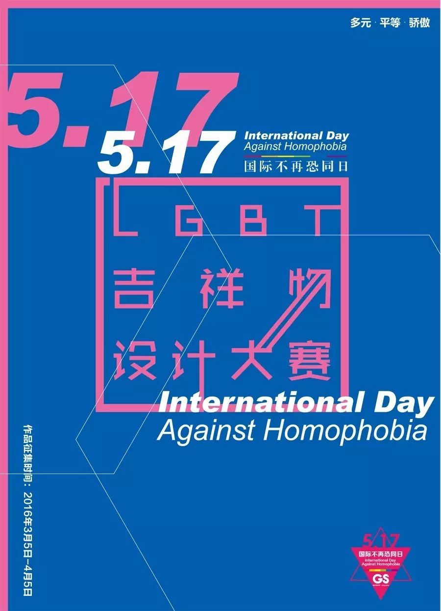

最受同志喜欢的吉祥物就要来了
我有一个基友，每每逛商场一看见玩具店就迈不动腿。他最喜爱的玩具是芭比娃娃，尤其喜欢《冰雪奇缘》里的女王，于是陆陆续续买了一堆送给自己的侄女，同事的孩子，当然自己也悄悄收藏了几个。
前阵子，在刚刚结束的柏林电影节上，来自台湾的作品《日常对话》获得了“泰迪熊奖”最佳纪录片。作为柏林电影节专门为同性恋题材电影所设的奖项，“泰迪熊奖”和泰迪熊这个备受同志喜爱的卡通形象有着千丝万缕的联系。
在20世纪70年代末期，美国第一代的同性恋运动者们希望通过一种方式，让别人知道他们是同性恋。他们想出来一个办法，就是让同志们在背包上挂一个泰迪熊，好让其他同志知道，他们并不孤独。加上柏林市的吉祥物就是“柏林熊”，柏林电影节奖项叫做“金熊奖”，于是“泰迪熊”就顺理成章的成为了柏林电影节同志电影奖项的名称。
在全球每年举办的各大同性恋骄傲游行里，卡通形象都是同志们最喜爱装扮的元素之一。比如这只彩虹小马。
在木有同志骄傲游行的天朝，网友们就只能调侃一下“海尔兄弟”了。
火爆全球的《天线宝宝》里，紫色的“丁丁（Tinky Winky）”被认为是同性恋，而他头上的倒三角形天线及身上的紫色，都是同性恋的象征。更有人说不仅丁丁是男同，而且拉拉(Laa-Laa，黄色那位)是女同，看名字也难怪……

在同性恋平权运动的历史上，“彩虹旗”绝对是一项重要的发明。彩虹旗的出现，让世界同性恋平权运动有了一个清晰的标识。如今，每逢重大的LGBT节日，各大商家纷纷将自己的LOGO变成六色彩虹，来表达对于性少数群体的支持。
去年2月5日，联合国首次发布了LGBT主题的纪念邮票，通过这套名为“自由与平等”的邮票，来推动性少数平等权益。
受到联合国LGBT主题邮票的启发，GS杂志于去年3月发起了“首届中国LGBT主题邮票设计大赛”。共有31位设计师参加了比赛，最终剪纸艺术家西亚蝶的设计，获得了大赛的首奖，并被制作成了“中国首套LGBT个性化邮票”。这套邮票运用了中国传统的剪纸手法，分别以男同性恋，女同性恋，双性恋，异性恋，跨性别和无性恋为主题，六幅剪纸共同构成了完整的设计，表达了不同性别和性取向的人之间相互尊重，和谐共处的愿望。
这次大赛得到了荷兰驻华使馆、联合国开发计划署、联合国邮政署的大力支持。去年5月17日“国际不再恐同日”，大赛的颁奖典礼和展览在北京荷兰驻华使馆举行，时任荷兰驻华大使凯罗先生亲自为获奖者们颁奖。
一年一度的“国际不再恐同日”又要到来了。在去年的成功基础上，GS杂志联合各大同志机构，将发起一项新的设计大赛——“LGBT吉祥物设计大赛”。秉承“国际不再恐同日”的理念，我们希望通过本次大赛推出一个代表“多元、平等、骄傲”的卡通形象，推动不同性别和性取向的人之间相互尊重，和谐共处。
如果你是一个有设计天赋的达人，运用你的天赋和热情，加入这项既有公益性，又有开创性的设计大赛吧。明天的世界，可能因为你的创造，而变得更加多元和美好。

国际不再恐同日
“LGBT吉祥物设计大赛”
作品征集时间：
2017年3月5日-4月5日
奖项设置：
首奖（1名）奖金 5000元
优胜奖（4名）奖金 500元
我们将于5月在北京举办“LGBT吉祥物设计大赛展”，获奖情况将于4月初通知设计师，优秀入围都有机会参加展览，首奖作品将被制作成实体玩偶。
参赛作品要求：
1、体现“多元、平等、骄傲”的理念；
2、可以但不限于Q版卡通人物、动物、植物, 同时具有表情、漫画、视频、公仔玩具等周边制作的延展性；
3、 作品需包含三视图（含：正面、侧面、背面），及三个或以上能表现该形象特色的动作或表情；
4、作品的规格：文件格式（JPG） ，分辨率（300dpi），尺寸（20cm*20cm），获奖作品须提交作品源文件PSD、CDR或AI；
5、作品须为应征者按照本方案的要求独立创作完成的原创作品，不得侵犯第三方的知识产权；不得侵犯他人合法知识产权。应征者作品如有任何相关的法律纠纷，其法律责任由应征者本人承担，活动的组织方有权取消该应征者的应征资格；
参赛方式：
直接将：吉祥物设计稿+吉祥物名称+设计理念阐述（500字以内）+联系方式（姓名、微信、电话）发送至邮箱：gstamp@163.com
报名志愿者
和加入合作机构请联系：
QQ：2428807
电话：010-53358736
主办机构：
《GaySpot 乐点》杂志
合作机构：
Blued | LESDO | 爱白 | 同语 | 纪安德 | 同性恋亲友会 | 北京同志中心 | 同志服务中心 | 北京女同志中心 | 爱之援助 | 天津深蓝 | 青桐 | 北京佐佑 | 山西蓝典 | 同志商务 | 发聲 SpeakOut | 东北农业大学 - 青彩Union | 南京大学 - 性别性向平等协会 | 广州六色彩虹公益小组 | 西安美院橄榄树公益小组 |酷儿论坛
支持机构：
荷兰驻华使馆 | 联合国开发计划署 | 加拿大资助地方活动基金